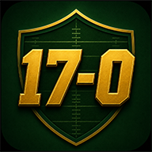

QB
Quarterback
Waiting...

Draft one historical player or unit at each position using random team rolls. You get one chance to re-roll the board before your season is calculated.
Fill QB, RB, WR1, WR2, and DEF.
Each pick is generated from a randomly rolled franchise.
Use your one re-roll carefully.
Your roster is graded into a 17-game record.
Roll a team franchise to start building your roster.
Waiting...
Waiting...
Waiting...
Waiting...
Waiting...
Your season summary will appear here.